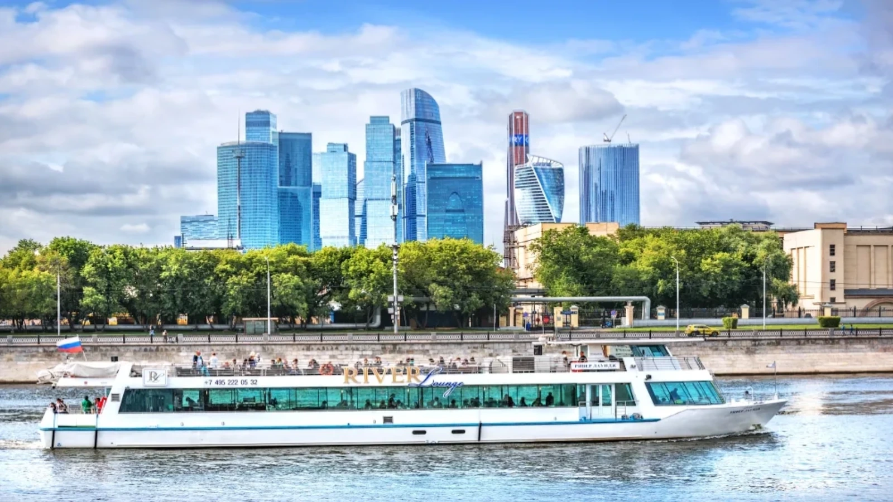

Без пробок
Время в пути не зависит от дорожной ситуации: рейс идёт строго по графику.
Три маршрута, одиннадцать пристаней и один билет на всю поездку. Рейсы каждый день с 06:30 до 21:00.

Время в пути не зависит от дорожной ситуации: рейс идёт строго по графику.
Оплатите поездку один раз и пересаживайтесь между линиями в течение 60 минут.
Пандусы на пристанях и в двух теплоходах, помощь экипажа при посадке.
Перевозим велосипеды и детские коляски бесплатно, если есть место на палубе.